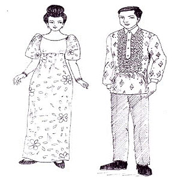

|
ประเทศฟิลิปปินส์

การแต่งกาย ของชาวฟิลิปปินส์ในยุคนั้นนิยมใช้เครื่องประดับกาย ชาวเกาะ
วิสายันชอบสักตามใบหน้า ร่างกาย และแขนขา ชายหญิงสวมเครื่องประดับที่ทำด้วยทองคำและเพชรพลอย ชาวพื้น เมืองนิยมใส่ปลอกแขน กำไล และสร้อยคอ ก่อนสเปนเข้าครอบครอง สังคมแบ่งออกเป็น 3 ชนชั้น คือ ขุนนาง เสรีชน และทาสในราวคริสต์ศตวรรษที่ 14 สเปนก็พบฟิลิปปินส์เป็นชาติแรก ต่อมาเกาะทุกเกาะก็ตกอยู่ในการปกครองของสเปน และได้รับอารยธรรมต่าง ๆ ตลอดจนประเพณี ศาสนา วัฒนธรรมการแต่งกาย และการดำเนินชีวิต ส่วนการแต่งกายก็ไม่มีการสวมเสื้อ แต่งกายแบบชาวเกาะ นิยมตกแต่งด้วยเครื่องประดับ และสักตามร่างกายดังกล่าวแล้ว
หลังจากสงครามโลกครั้ง ที่ 2 ฟิลิปปินส์ได้เอกราชตามสนธิสัญญา เหตุการณ์บ้านเมืองศิลปวัฒนธรรม เครื่องแต่งกาย ก็มีการผสมผสานกันระหว่างชาวยุโรป เอเชีย และตะวันตกเครื่องแต่งกายประจำชาติเป็นเสื้อ คอกว้างแบบตะวันตก แขนยกตั้ง เป็นปีกกว้าง ทำด้วยผ้าบางและแข็งอย่างไหมสับปะรด นุ่งกระโปรงติดกับเสื้อ เป็นชุดเดียวกัน ส่วนตามเกาะต่าง ๆ มีการแต่งกายแบบคล้ายชาวมลายู และอินโดนีเซีย คือ นุ่งโสร่งปาเต๊ะ สวมเสื้อ ผ้าไหมสับปะรดหรือแพรแขนกระบอกยาวจดข้อมือ มีผ้าพาดบ่า ส่วนผู้ชายจะสวมเสื้อ แขนยาวทำจากใบสับปะรด นุ่งกางเกงแบบสากลการทอผ้าใยสับปะรดทองฟิลิปปินส์ ทอกันมากกว่า 400 ปี หรือมากกว่า การทอใยสับปะรดเป็นงานที่ละเอียดอ่อนใช้เวลามาก ใยสับปะรดเป็นเส้นใยที่มีความเหนียวดีมาก โดยเฉพาะเส้นใยของสับปะรดที่ได้จากเมืองอะคลัน |